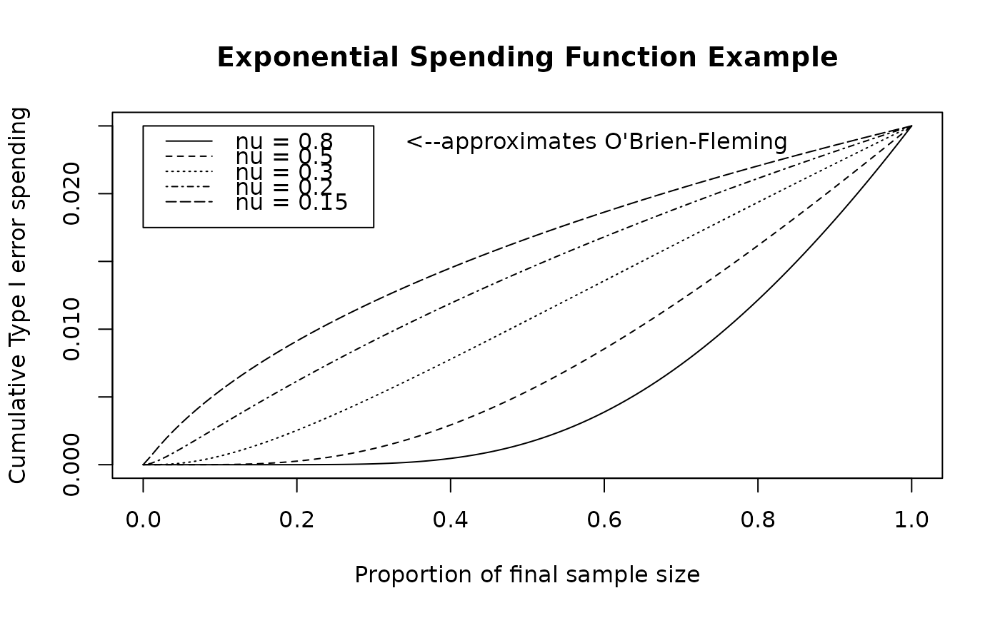

The function sfExponential implements the exponential spending
function (Anderson and Clark, 2009). Normally sfExponential will be
passed to gsDesign in the parameter sfu for the upper bound or
sfl for the lower bound to specify a spending function family for a
design. In this case, the user does not need to know the calling sequence.
The calling sequence is useful, however, when the user wishes to plot a
spending function as demonstrated below in examples.
An exponential spending function is defined for any positive nu and
\(0\le t\le 1\) as
$$f(t;\alpha,\nu)=\alpha(t)=\alpha^{t^{-\nu}}.$$
A value of nu=0.8 approximates an O'Brien-Fleming spending function
well.
The general class of spending functions this family is derived from requires
a continuously increasing cumulative distribution function defined for
\(x>0\) and is defined as $$f(t;\alpha,
\nu)=1-F\left(F^{-1}(1-\alpha)/ t^\nu\right).$$ The exponential spending function can be
derived by letting \(F(x)=1-\exp(-x)\), the exponential cumulative
distribution function. This function was derived as a generalization of the
Lan-DeMets (1983) spending function used to approximate an O'Brien-Fleming
spending function (sfLDOF()), $$f(t; \alpha)=2-2\Phi \left(
\Phi^{-1}(1-\alpha/2)/ t^{1/2} \right).$$
Arguments
- alpha
Real value \(> 0\) and no more than 1. Normally,
alpha=0.025for one-sided Type I error specification oralpha=0.1for Type II error specification. However, this could be set to 1 if for descriptive purposes you wish to see the proportion of spending as a function of the proportion of sample size/information.- t
A vector of points with increasing values from 0 to 1, inclusive. Values of the proportion of sample size/information for which the spending function will be computed.
- param
A single positive value specifying the nu parameter for which the exponential spending is to be computed; allowable range is (0, 1.5].
Note
The gsDesign technical manual shows how to use sfExponential()
to closely approximate an O'Brien-Fleming design. An example is given below.
The manual is available at <https://keaven.github.io/gsd-tech-manual/>.
References
Anderson KM and Clark JB (2009), Fitting spending functions. Statistics in Medicine; 29:321-327.
Jennison C and Turnbull BW (2000), Group Sequential Methods with Applications to Clinical Trials. Boca Raton: Chapman and Hall.
Lan, KKG and DeMets, DL (1983), Discrete sequential boundaries for clinical trials. Biometrika; 70:659-663.
Author
Keaven Anderson keaven_anderson@merck.com
Examples
library(ggplot2)
# use 'best' exponential approximation for k=6 to O'Brien-Fleming design
# (see manual for details)
gsDesign(
k = 6, sfu = sfExponential, sfupar = 0.7849295,
test.type = 2
)$upper$bound
#> [1] 4.998123 3.598098 2.933292 2.530838 2.253723 2.047082
# show actual O'Brien-Fleming bound
gsDesign(k = 6, sfu = "OF", test.type = 2)$upper$bound
#> [1] 5.028296 3.555542 2.903088 2.514148 2.248722 2.052793
# show Lan-DeMets approximation
# (not as close as sfExponential approximation)
gsDesign(k = 6, sfu = sfLDOF, test.type = 2)$upper$bound
#> [1] 5.366558 3.710340 2.969736 2.538677 2.252190 2.044790
# plot exponential spending function across a range of values of interest
t <- 0:100 / 100
plot(t, sfExponential(0.025, t, 0.8)$spend,
xlab = "Proportion of final sample size",
ylab = "Cumulative Type I error spending",
main = "Exponential Spending Function Example", type = "l"
)
lines(t, sfExponential(0.025, t, 0.5)$spend, lty = 2)
lines(t, sfExponential(0.025, t, 0.3)$spend, lty = 3)
lines(t, sfExponential(0.025, t, 0.2)$spend, lty = 4)
lines(t, sfExponential(0.025, t, 0.15)$spend, lty = 5)
legend(
x = c(.0, .3), y = .025 * c(.7, 1), lty = 1:5,
legend = c(
"nu = 0.8", "nu = 0.5", "nu = 0.3", "nu = 0.2",
"nu = 0.15"
)
)
text(x = .59, y = .95 * .025, labels = "<--approximates O'Brien-Fleming")
